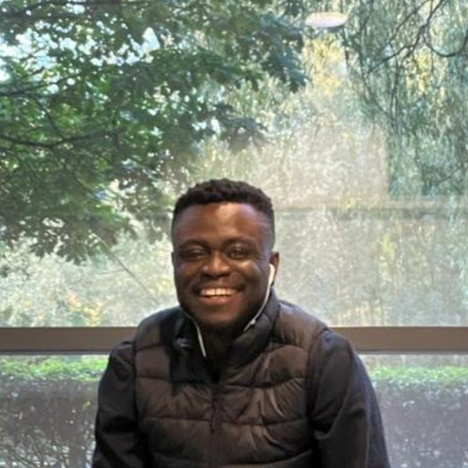

Pascal Ononaku

Summary
A creative, ready-to-work, and conscientious Public Health
and Community well-being postgraduate student with excellent communication, research, and problem-solving skills gained from practical experiences.
Education
- Master of Science, Public Health and Community Well-being - Anglia Ruskin University (2022-2023)
- Bachelor of Science, Parasitology and Entomology - Nnamdi Azikiwe University (2015-2019)
Work Experiences
- Student Consultant Team Member - ARU SHoKE
May - June 2023
- Participated in 10 hours plus consultancy training programme with workshops on problem-solving, leadership, team working, planning, and presenting skills
- Joined a SHoKE student consult multi-discipline project team which tackled challenges presented by external partners
- Applied knowledge, skills, and experience to devise and present a student consultancy report to stakeholders
- Participated in interactive workshops on problem-solving and presenting skills
- Applied gained knowledge, skills, and experience: and presented a solution-focused proposal to stakeholders on introducing street games to keep youths out of the justice system
- Healthcare Assistant - Glenavon Care
October 2022 - January 2023
- Assisting patients with their daily personal care
- Assisting with patient mobility and manual handling
- Ensuring proper recording of daily activities
- Housekeeper - Graduate Hotel. Cambridge
April 2022 - October 2022
- Delivering excellent room services
before guest lodges and after guests departure
- Logging in of recovered items from guests rooms
- Supervision of rooms to ensure quality
- Start-Up Manager - De Accessories Hub
November 2019 - December 2021
- Overseeing the importation of computers, electronic gadgets, and accessories
- Overseeing social media ads to drive sales
- Presenting team talks on strategic plans
- Constantly raised sales by nearly 10% over monthly target
- Level 3 Industrial Training (Laboratory Assistant) - ST. Faith Hospital
April 2017 - October 2017
- Received exceptional training on laboratory ethiquet and handling
- Carrying out accurate ABO typing, WIDAL (typhoid tests), HIV strip testing, and hepatitis testing
- Demonstrated exceptional ability to carry out venepunctures and urinalysis
- Assisted in unpacking, identifying, processing, and storing samples
Skills
- Proficiency in html 5
- MBM SPSS v20
- Microsoft Office Suite
- Leadership
- Complex problem-solving
- Consultancy
- Critical and Analytical reasoning
- Time-management
- Team Work
- Research
Awards
- Employee of the month - Graduate Hotel, Cambridge
Other